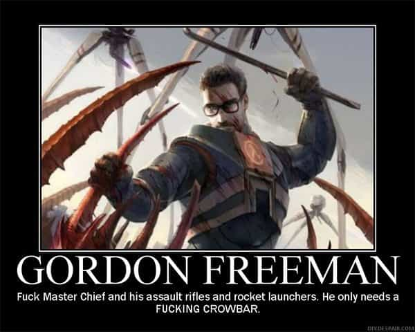
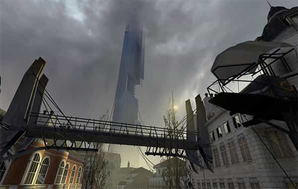
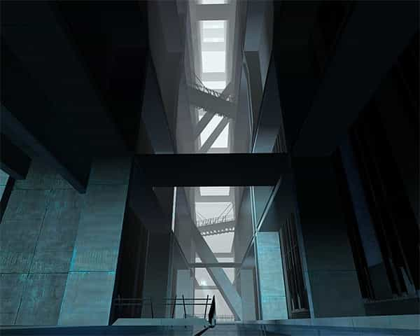

André is a young European who left his decaying country in 2012 for greener pastures. He enjoys exploring subterranean places, reading about a host of interconnected topics, and yearns for Tradition.


Since the release of its first opus, the Half-Life series has had an almost mythical aura. Sure, its gameplay was well-thought, its graphic engine quite advanced—but beyond that, the series has a good story arc and a compellingly immersive universe. This has been true for both Half-Life (1998), Half-Life 2 (2004) and the following two Episodes (2006-7).
Video games are often derided on the manosphere as a beta-tailored false reality that encourages escapism. Indeed, the typical beta male flees from the harshness of the outside world and rushes into a fantasy where he plays the adventurer, the hero, or anything else he wishes from behind his keyboard. Even worse, the collective man cave of video games has been invaded by restless SJWs who poised the place with stinky blue pill propaganda.
Half-Life did not escape this fate: the second part and following episodes have thrown on the player’s face a strong-and-badass-womyn character, Alyx Vance, who has been complacently placated on Half-Life 2: Episode 1 cover.
Muh strong womyn! At least she’s nice to Gordon
Yet, as with anything in life, what matters is less the thing in itself than the use we make of it. I usually enjoy playing management games to learn in a light-hearted way about accounting and market mechanisms. Likewise, in the Half-Life series, I have found a brilliant example of (mis)management, and although the stroke may seem exaggerated, there is definitely something to be gleaned from it.

Everyone knows about Gordon Freeman. A young scientist and engineer, he also happens to be a fairly good adventurer—by the player’s efforts—a lone ranger, and a mute-but-purposeful man. In the first Half-Life game, Gordon arrives at the secret base of Black Mesa, participates in an innovative experiment that, (un)surprisingly, opens a multidimensional portal.
The aperture floods with wild, ferocious animals from previously unknown universes, and what happens mirrors exactly what happened in real life when European explorer set foot on remote islands: the “evolved” animals they brought with them, especially cats, crushed the insular less-evolved ones. HL1 consists mostly in escaping from alien teeth and claws. The gameplay is entertaining but there is not much to say about the narrative.
Half-Life 2, so to speak, is another story. Waking up from an unexplained ten-years sleep, Gordon Freeman finds that the multidimensional portal attracted not only wild alien beasts, but also an intelligent and more dangerous entity, the Combine Empire.
A multidimensional entity, highly advanced and organized, the Combine seized up the opportunity of the open portal to send an enormous army on Earth. When Freeman arrives, the Combine has annihilated untold millions. Only cities survive under the Combine rule whereas the wild aliens met with in H1 wander wherever they can find food or a suiting environment. Most, if not all of HL2 and the following episodes, happen in or around City 17, nothing being said or happening anywhere else.

At first glance City 17 looks like a mishmash between the Soviet Union (or 1984) and your classical sci-fi novel. The Combine treats people like cattle, forcing them to pass through an indefinite number of checkpoints every day under the cold look of masked soldiers. Intimacy is but a distant memory.
Flying security cameras, force fields and blue metal Combine furniture set the tone for daily life. Wallace Breen, a “wise elder” type, tangentially Gordon Freeman’s ex-boss, appears all the time on giant public screens spouting pro-Combine propaganda.
In real life, this shill would work for Conservative Inc.
The background once set, Half-Life 2 may look like an immersive shooting gallery. It is so, but once again, more than this is at stake. For Gordon Freeman knows right from the start what he must do and who he must attack. Imagine for a second that you were teleported into a kind of futuristic Big Brother State: would you know with certainty what you should do if at all? Well, Gordon Freeman does.
Namely, he attacks the Combine Empire, this seemingly all-powerful entity that managed to annihilate and enslave humanity. With a cool head, Gordon’s choice should seem nonsensical: how could a lone ranger, arguably helped by a loose resistance, fight a heavy, highly advanced empire?
The answer: with determination and a plan. First, Freeman manages to find secret passages in City 17 so he can move on even when hunted down. Second, he scrounges on weapons and makes contact with anti-Combine resisters. Third, he targets key Combine places, such as industrial facilities, officers’ mess and high-security prisons, as to weaken their hold over City 17.
Sometimes Freeman takes the more discrete way, and then he must face nasty alien animals, yet he knows these are just animals: there is no time to lose destroying them. Instead, Freeman manages to get some of them on his side, and as the Combine organization eventually crumbles, their soldiers will find themselves overwhelmed with these.
The tenacious Freeman thus focuses on the right enemy, no matter how nasty the headcrabs or antlions you spend half of the game shooting at. By these deeds, he manages to gather and inspire resisters so much that they rise up against those they spent years frightened of. At the end of Half-Life 2, as City 17 is completely torn apart by the war between Combine soldiers and human resisters, Gordon Freeman makes his way to the heart of the Empire on Earth, the Citadel.

When the player enters the Citadel, he is struck by the cold, strange architecture, which features unsettling asymmetries and drops. All he knows is that the top of the building is a dimensional portal—and if Freeman makes his way up there he may destroy it, thus cutting the Combine’s communications and pinning their forces on Earth. By hitting at such a focal point, Freeman keeps his momentum and forces the Empire’s managers, that is, the top enemies, to show themselves.
So far in HL2 there are no managers in sight. Combine soldiers and policemen are enforcers, not decision-makers. The “wise elder” Wallace Breen himself is but a spokesperson, a hired face. So, it should be asked, who is in charge of this whole stuff? Is there a Deep State? Well, there is—and at the end of HL2, Breen can be seen supplicating one of its members: it is made of fat, amorphous, ugly, but also hugely intelligent and telekinetic power-endowed creatures referred to as Advisors. In all aspects they seem like a caricature of a degenerate managerial elite.
From the beginning of their existence, the Advisors were a highly intelligent species. These excellent engineers managed to pair biological with robotic expertise to create bionic creatures and master technologies unknown to man. Top supervisors as well, they excel in distributing whatever goods and service—and constraining—whoever is ruled over.
Their information-managing facilities seem rudimentary, but their production lines and machinery are impressive: it is powerful enough to, say, dry an entire sea by sucking up all its water. This means they can handle very complex calculations by head and are likely to have a wide memory. They don’t have the computers we use for making calculations because they simply don’t need these. And they can handle objects at will through sheer telekinesis. Impressive, isn’t it?
Two Advisor aliens. One of them is taking breakfast
On the other hand, they are completely degenerate and unfriendly in every aspect. In addition to their sheer physical ugliness, they have no sympathy or feelings for anyone or anything but themselves. All living organisms working for them, human or otherwise, are manipulated and automatically surged without remorse.
They have no sense of beauty or aesthetics: their architecture is functional, the Citadel’s plan makes a lot more sense once you understand it was thought for them to dwell in next to their core facilities, yet even then no beauty-sensitive being would have designed it this way. They also behave like extreme cases of autism in at least two respects.
First, they dwell so much in their own Citadel they never get out of it even once—until Freeman’s daring attacks force them out. Second, they show rigid thinking patterns by either plundering and mistreating any place or thing they are interested in or abandoning it completely, without any ability to nuance.
The Advisors’ most striking feature: they are spineless cowards. Having spent an indeterminate time in cushy pods with everyone around obeying them, they lose their mind when meeting a clever and courageous opponent. The end of HL2 hints at this.
As Freeman rushes into the Citadel, any Advisor could step out his pod and use his telekinetic power to immobilize him and rip him apart. Well, no one does. Instead, they keep sending soldiers—an astonishingly stupid decision as Freeman can kill them all with ease. None of them dared to go face to face with a single human and their lack of courage allows Freeman to destroy the trans-dimensional portal at the very top.
From the heights of a not-so-stable power
In Episode 1, as the resisters get the upper hand and the Combine organization lines crumble, the Advisors choose the way of slightest effort . They won’t face the resisters even if they still have plenty of soldiers and synths: instead, they start overheating their own nuclear heart in order to destroy the whole city.
Gordon Freeman manages to stabilize the heart, once again without any Advisor confronting him directly. In the course of the episode he meets with an Advisor… who merely sends him waves of psychic attacks, hiding inside his pod.
In Episode 2, as the battle moves to the countryside, the player sees an Advisor in an out-of-order pod who strolls with at least fifty soldiers and machines as convoy. Does a mighty being need so much protection against an impoverished guerrilla?
Eventually, driving in the woods, Freeman notices a crashed Advisor pod. Inferring the alien’s closeness he searches it out and finds it hiding inside a life-support facility itself tucked inside a barn. If he just considered the balance of power, Freeman should let the grubby alien alone: instead, following his intuition, he forces it out by attacking the cocoon. Reluctantly, the creature appears. It instantly disarms and lifts Freeman. It could snap the hero’s neck and put an end to the whole war. But, once again, it doesn’t.
Instead, the player can see the Advisor hesitate—for too long: an explosion happens, the creature is wounded, and instead of finishing the job, it freaks out, releases Freeman, destroys half of the barn to make itself an armour, and flees. It also sends soldiers to do what it could have done much more easily if only it had the courage.
An exclusive screenshot of Half-Life 3. Note the improved level of detail on the Advisor’s face
Beyond the sheer video game qualities, the Half-Life series shows us a credible sci-fi dystopia with a logic of its own. In my opinion we can find it both a lesson in intelligent warfare, as the crowbar-using hero never loses focus on who he must attack relentlessly amidst the headcrabs and laser shots, and a creative caricature of foreign, degenerate elite.
The brilliant engineers and managers of a multi-dimensional empire are also maggot-like, autistic creatures who lack most human feelings, have no aesthetic sense, live in complete isolation from the world(s) they haughtily manage and flee from much weaker enemies.
Psychologically speaking, they seem to have a very high performance intelligence and a low verbal one. Perhaps if we reverse this makeup, so to have a high verbal intelligence paired with a low performance one, we get a hostile elite that looks less like “our benefactors”—Breen’s in-game expression—and more like (((our greatest ally))). That is, an elite that looks down on blue collars and engineers but is glad to use what they produced.
Read Next: 4 Underrated Classic Video Games